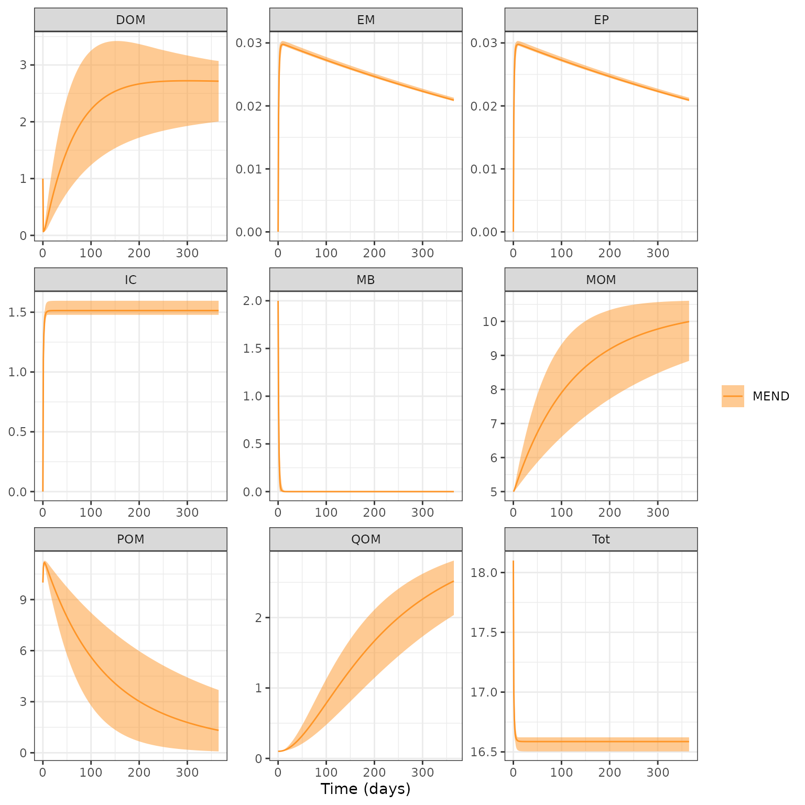

Senstivity-Analysis
sens.RmdThe objective of this example is demonstrate how to easily conduct a
sensitivity analysis and visualize results using
memc_sensrange, memc_sensfunc, and
memc_format_sensout. This is a demonstration of package
capabilities more than a rigorous analysis. The first section will
demonstrate how to use the MEMC functions related to sensitivity
analyses, and the second will show how alternative model configurations
can affect sensitivity results.
Define the paramter ranges
Set up a data frame defining the parameter ranges to sample from. Any model parameters or initial pool sizes can be used; in this example we explore the effects that maximum specific decomposition constants for POM, DOM, and MOM have on model behavior. For simplicity, here we sample a broad range (50% of the parameter value), but a real analysis would use more informed parameter ranges from the literature,
pars <- c("V_d" = 3.0e+00, "V_p" = 1.4e+01, "V_m" = 2.5e-01)
prange <- data.frame(pars = pars,
min = pars * 0.50,
max = pars * 1.50)
memc_sensrange
The memc_sensrange function is MEMC
specific wrapper of FME::sensRange.
memc_sensrange allows users to easily run a
MEMC model configuration with parameter combinations drawn
from a predefined distribution, ultimately generating an uncertainty
envelope around model results.
The inputs to MEMC’s memc_sensrange function are:
-
config: a MEMC model configuration object, either one of the pre-built configurations listed inmemc_all_configsor created usingmemc_configure -
t: vector of the time steps to run the model at *pars: vector of the parameters that will be varied -
parRange: data frame of the min/max parameter values -
dist: str for the distribution according to which the parameters will be sampled from, with options “unif” (uniformly random samples), “norm”, (normally distributed random samples), “latin” (latin hypercube distribution), and “grid” (parameters arranged on a grid) -
n: integer number of sampled parameter combinations to run the model with
MENDsens_out <- memc_sensrange(config = MEND_config,
t = seq(0, 365),
x = pars,
parRange = prange,
dist = "latin",
n = 50)Take a quick look at the results.
head(MENDsens_out)
#> name time Mean Sd Min Max q05 q25 q50
#> 1 MEND 0 10.00000 0.00000000 10.00000 10.00000 10.00000 10.00000 10.00000
#> 2 MEND 1 10.86992 0.19439305 10.53020 11.18292 10.57510 10.72961 10.84806
#> 3 MEND 2 11.12541 0.11780458 10.85746 11.29208 10.91514 11.06901 11.13699
#> 4 MEND 3 11.17755 0.05953595 11.03575 11.26213 11.08888 11.13324 11.18862
#> 5 MEND 4 11.15520 0.08413019 10.96736 11.28846 10.99452 11.11386 11.16870
#> 6 MEND 5 11.10183 0.12984174 10.82407 11.27720 10.86392 11.01607 11.13782
#> q75 q95 variable
#> 1 10.00000 10.00000 POM
#> 2 11.05082 11.15449 POM
#> 3 11.21465 11.28131 POM
#> 4 11.23029 11.25679 POM
#> 5 11.22252 11.26839 POM
#> 6 11.21506 11.25610 POMVisualize results using R’s base plot function. This is
a quick way to look at results, but for more user control over the
figures we recommend using ggplot2.
plot(MENDsens_out)
memc_sensfun
Given a MEMC model configuration, estimate the local effect of
certain parameters on selected sensitivity variables by calculating a
matrix of so-called sensitivity functions based on
FME::sensFun.
The inputs to MEMC’s memc_sensfun function are: *
config: a MEMC model configuration object, either one of
the pre-built configurations listed in memc_all_configs or
created using memc_configure * t: numeric
vector of the time steps to run the model at * pars: vector
specifying the model parameters to test
sens_out <- memc_sensfunc(config = MEND_config,
t = seq(0, 365),
x = c("V_d" = 3.0e+00,"V_p" = 1.4e+01,"V_m" = 2.5e-01))Take a look at the results.
head(sens_out)
#> name time variable parameter value
#> <char> <num> <char> <fctr> <num>
#> 1: MEND 0 POM V_d 0.000000000
#> 2: MEND 1 POM V_d 0.048743867
#> 3: MEND 2 POM V_d 0.033570845
#> 4: MEND 3 POM V_d 0.015965606
#> 5: MEND 4 POM V_d 0.004513539
#> 6: MEND 5 POM V_d -0.001963303
memc_format_sensout
To visualize the results from memc_sensfun we use the
helper function memc_format_sensout, which formats the
returned object into a data frame that can be used by
ggplot.
ggplot(data = sens_out) +
geom_line(aes(time, value, color = parameter)) +
facet_wrap("variable", scales = "free")
Global Parameter Sensivity Model Comparison
prange <- data.frame(pars = c("V_d" = 3.0e+00,
"V_p" = 1.4e+01,
"V_m" = 2.5e-01),
min = pars * 0.50,
max = pars * 1.50)Use the same parameter ranges with each of the different MEMC model configurations.
time <- seq(0, 100)
MENDsens_out <- memc_sensrange(config = MEND_config,
t = time,
x = pars,
parRange = prange,
dist = "latin",
n = 50)
COMISSIONsens_out <- memc_sensrange(config = COMISSION_config,
t = time,
x = pars,
parRange = prange,
dist = "latin",
n = 50)
CORPSEsens_out <- memc_sensrange(config = CORPSE_config,
t = time,
x = pars,
parRange = prange,
dist = "latin",
n = 50)
MEMSens_out <- memc_sensrange(config = MEMS_config,
t = time,
x = pars,
parRange = prange,
dist = "latin",
n = 50)
BAMSens_out <- memc_sensrange(config = BAMS_config,
t = time,
x = pars,
parRange = prange,
dist = "latin",
n = 50)
MIMCSens_out <- memc_sensrange(config = MIMCS_config,
t = time,
x = pars,
parRange = prange,
dist = "latin",
n = 50)Prepare all of the data into a single data frame for plotting.
out <- rbind(MENDsens_out, COMISSIONsens_out, CORPSEsens_out,
MEMSens_out, BAMSens_out, MIMCSens_out)
ggplot(data = out) +
geom_ribbon(aes(time, ymin = q25, ymax = q75, fill = name), alpha = 0.5) +
geom_line(aes(time, Mean, color = name)) +
facet_wrap("variable", scales = "free") +
labs(y = "mg C/g soil",
x = "Time (days)",
title = "Global Sensitivity to Vd, Vp & Vm",
subtitle = "q25/q75") +
theme(legend.title = element_blank()) +
scale_fill_manual(values = memc_colorPalette()) +
scale_color_manual(values = memc_colorPalette())Comparison of Local Parameter Sensivity
Use the memc_sensfun to compare the sensitivity of the
DOM pool to V_d and K_d, two parameters that
affect the MB uptake of DOM for MEND and CORPSE.
time <- 0:100
MENDsens_out <- memc_sensfunc(config = MEND_config,
t = time,
x = c("V_d" = 3.0e+00,"K_d" = 0.250),
sensvar = "DOM")
CORPSEsens_out <- memc_sensfunc(config = CORPSE_config,
t = time,
x = c("V_d" = 3.0e+00,"K_d" = 0.250),
sensvar = "DOM")Format output and visualize the results.
out <- rbind(CORPSEsens_out, MENDsens_out)
ggplot(data = out) +
geom_line(aes(time, value, color = name)) +
facet_wrap("parameter", scales = "free") +
labs(title = "Local Senstivity to DOM",
x = "Time (days)", y = "" ) Model Sensitivity to Inital Pool Sizes
The MEMC models are also sensitive to the initial pool size! Here we will demonstrate how model results are sensitive to uncertainty within a single pool! This being said the initial carbon pool sizes matter and users will need to make sure that they are using the appropriate values for their applications.
pools <- c("DOM" = 1)
prange <- data.frame(pools = pools,
min = pools * 0.50,
max = pools * 1.50)
inital_pool_uncertainty <- memc_sensrange(config = MEND_config,
t = seq(0, 365),
x = pools,
parRange = prange,
dist = "latin",
n = 50)
plot(inital_pool_uncertainty)